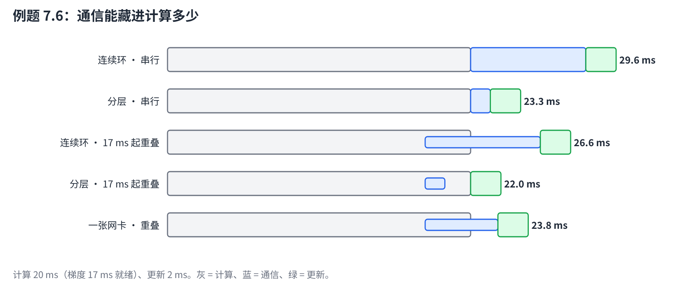
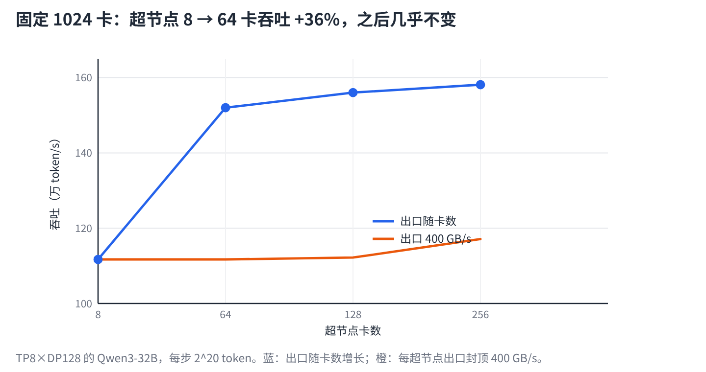
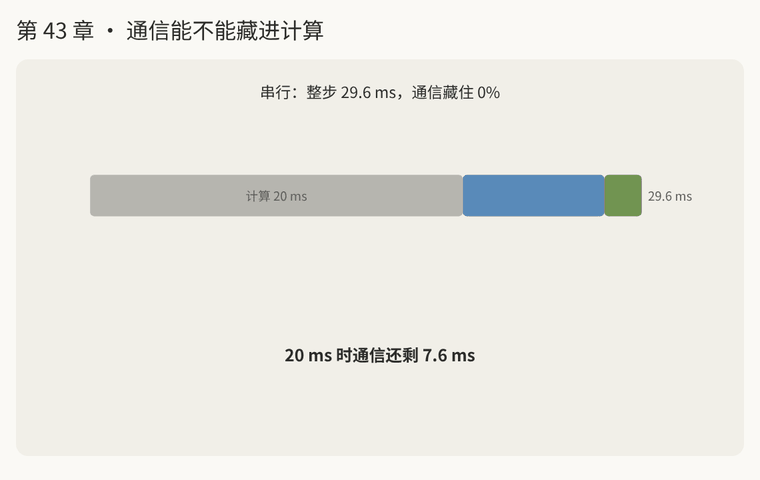

第 43 章 · 从通信改进到任务完成：先看谁晚到，再看能藏多少
本地运行
git clone https://github.com/wikieden/ai-infra-from-constraints
cd ai-infra-from-constraints/code/notebooks
pip install jupyterlab torch numpy
jupyter lab ch43_task_completion.ipynb也可以下载后直接用 VS Code 打开 .ipynb 运行。需要 GPU 的章节在 Colab 里选「代码执行程序 → 更改运行时类型 → GPU」。
本章回答：通信快了一倍，训练步为什么几乎没变？一个参与者晚到 25 ms，为什么全组都晚 25 ms？梯度在计算结束前就绪，通信能藏掉多少？训练和低并发推理该先优化带宽还是启动？固定 1024 张卡，超节点从 8 卡变 256 卡，吞吐和故障恢复怎么变？
讲解日期：2026-11-24 · 上一章：第 42 章 共享网络中的拥塞与可靠性 · 下一章：第 44 章 推理请求的执行过程与资源需求
对应原文：materials/ai-infra-book/manuscripts/07-数据中心网络.md§7.6 L830–L1029（例题 7.6，图 7-51 到 7-62）、本章小结
本章缩写：MegaScale = 字节跳动的大规模训练系统 · ZeRO = Zero Redundancy Optimizer（零 / 冗余 / 优化器）· p99 = 第 99 百分位数。全部缩写见 缩写与术语表
讲解
第一步：关键路径从数据就绪开始（2026-11-24）
类比：四个人约好一起出发。 三个人准时到了，第四个晚 2 小时；把路上的车开快一倍只省 12 分钟，让第四个人准时才省 2 小时。
原文 L834–L852：四个参与者在 0、0、0、2 ms 就绪，全到齐后交换 0.4 ms：
| 做法 | 全组完成 |
|---|---|
| 原样 | 2.4 ms |
| 交换减半 | 2.2 ms |
| 四人同时就绪 | 0.4 ms |
一张卡早早进了集合通信在等另一张，这段等待记在通信调用里，根源却在前面的计算。MegaScale 发现带宽稳定但各卡开始通信的时间差越来越大；配套 Gloo 实验：一个参与者晚到 25.1 ms，全组从 1.6 涨到 26.6 ms，最后一人到达后的尾段仍约 1.6 ms。分桶：一个桶的梯度一生成就开始归约，和下一桶的计算重叠。
一句话：通信何时开始由最晚就绪的参与者决定；时间线要从数据生成画起。
第二步：例题 7.6：同一个通信优化在不同顺序下省多少（2026-11-24）
类比：做饭的最后一步装盘要等菜炒好、汤也煮好。 汤煮得再快，只要比炒菜早好，装盘时间就不变。
原文 L856–L904：192 MiB 梯度，计算 20 ms（梯度 17 ms 就绪），更新 2 ms：
| 安排 | 通信 | 整步 |
|---|---|---|
| 连续环，串行 | 7.6 ms | 29.6 ms |
| 分层，串行 | 1.3 ms | 23.3 ms（通信少 83%，整步少 21%） |
| 分层，每卡只有 128 个在途 | 2.3 ms | 24.3 ms |
| 连续环，17 ms 起与计算重叠 | 7.6 ms | 26.6 ms |
| 分层，17 ms 起重叠 | 1.3 ms | 22.0 ms（通信全藏住） |
| 分层重叠，但只剩一张网卡 | 4.8 ms | 23.8 ms |

图 43-1 · 灰为计算、蓝为通信、绿为更新；蓝色的长度由流量和并发决定，起点由就绪时刻决定。
分层通信最晚在 18.7 ms 就绪仍能藏住；藏住以后再缩短通信就没用了，要优化计算或更新。改进顺序：先分层减跨服务器字节并让每张网卡都有活 → 并发提交用满带宽 → 找能提前开始的通信 → 通信被盖住后优化计算。
一句话：通信加速比不是任务加速比；先让通信能提前开始，盖住之后它就不在关键路径上了。
第三步：训练看带宽，低并发推理看启动（2026-11-24）
类比：搬家 vs 寄信。 搬家换大卡车有用；寄信换大卡车没用，要减少的是去邮局的次数。
原文 L908–L934：8 卡环，每轮启动 5 μs：
| 50 GB/s | 150 GB/s | |
|---|---|---|
| 8 MiB | 364 μs | 168 μs |
| 8 KiB | 70.3 μs | 70.1 μs |
转折约 2 MB。36 层、每层两次 8 KiB 归约：带宽 ×3 只省约 14 μs；启动 5 → 2 μs 省约 3.0 ms。
尾延迟：100 次通信，98 次 0.4 ms、1 次多等 2 ms、1 次恢复多等 10 ms：平均 0.52 ms，p99 2.4 ms；正常传输减半 p99 才 2.2；再多一次恢复，p99 就变 10.4 ms。
状态迁移：DeepSeek V4.1 的 128K 全局 KV 经 25 GB/s 迁移：V4-Flash 439 MiB 18.4 ms，V4.1 111 MiB 4.7 ms，压缩省 13.8 ms（第 9 部分接着比迁移还是重算）。
一句话：大数据减字节、提带宽、重叠；小数据减同步次数、缩短发起路径；尾部要缩小故障影响范围。
第四步：固定 1024 张卡，超节点变大（2026-11-24）
类比：一个公司 1024 人，部门越大，跨部门开会的人越少。 但部门大到一定程度，开会已经不是瓶颈，再合并部门只增加一次出错时受影响的人。
原文 L940–L1005：Qwen3-32B，TP8×DP128，每步 \(2^{20}\) token，每卡梯度分片 \(G = 8\) GB（BF16）。超节点 \(S\) 卡，\(H = 1024/S\) 个，每个超节点内同一 TP 坐标有 \(q = S/8\) 个 DP 成员：
（计算按 41% MFU、TP 通信 0.086 s、更新 0.050 s。）
| 超节点 | 每节点跨域发送 | 出口随卡数：步时间 / 吞吐 | 出口固定 400 GB/s |
|---|---|---|---|
| 8 卡 | 127 GB | 0.939 s / 111.7 万 token/s | 0.939 s |
| 64 卡 | 120 GB | 0.690 s / 152.0 万 | 0.939 s（连续环更快） |
| 128 卡 | 112 GB | 0.672 s / 156.0 万 | 0.935 s |
| 256 卡 | 96 GB | 0.663 s / 158.1 万 | 0.896 s |

图 43-2 · 出口随卡数增长时 8 → 64 卡提高 36%（每卡跨节点只交换 1/8）；128 → 256 只多 1.3%：此时计算与 TP 通信占 86%。
- 超节点扩大 16 倍，跨出口的字节只从 127 降到 112 GB：出口不会随节点变大自动变宽。
- 3:1 超售时 128 卡的跨域项 17.5 → 52.5 ms。
- 128 卡里比 TP8 / 16 / 32 / 64：0.672 / 0.753 / 0.942 / 1.333 s，TP8 仍然最好。
故障（原文 L996–L1005）：
每 600 s 存 10 s checkpoint；1024 卡作业平均 7.9 小时中断一次；恢复 60 s + 读回状态（128 卡 188 s、256 卡 316 s）：开销 3.4% / 3.8%，有效吞吐 150.9 / 152.3 万。256 卡恢复慢，但多出的开销仍小于正常吞吐的提高。
本部分四个误区（原文 L1015–L1023）：发送总量相同 ≠ 耗时相同；平均利用率低 ≠ 扛得住高峰；按序返回 ≠ 读到新值；通信加速比 ≠ 任务加速比。
一句话：大超节点省的是跨出口那段；省完以后看计算和故障恢复，不要默认把 TP 开满。
动画演示：通信能不能藏进计算

可交互版：animations/43-task-completion.html（滑块：通信时长 0.5–10 ms；梯度就绪时刻 10–20 ms；开关：串行 / 重叠）。
怎么看：
- 三段：计算 20 ms（灰）、通信（蓝）、更新 2 ms（绿）（第二步）；
- 串行时通信接在计算后；重叠时从就绪时刻开始；
- 右边显示整步时间、被藏住的通信比例；
- 播放：连续环串行 → 分层串行 → 连续环重叠 → 分层重叠（全藏住）→ 一张网卡。
练习与作答记录
题 1（第二步）：计算 30 ms、梯度 24 ms 就绪、更新 3 ms，通信 5 ms。串行和重叠各多久？通信最多能有多长还藏得住？
作答记录：（待作答）
题 2（第三步）：16 卡环（30 轮），每轮启动 4 μs、带宽 50 GB/s，48 层每层两次 16 KiB 归约。启动减到 1 μs 省多少？带宽翻倍省多少？
作答记录：（待作答）
题 3（第四步）：checkpoint 每 900 s 存 15 s，作业平均 5 小时中断一次，恢复 240 s。开销比例 \(\epsilon\) 多少？
作答记录：（待作答）
原书实验 7-15（L1027）。想多练可以做。
口诀
四人约出发看最晚那个，车开快不如让他准时；
装盘等菜和汤，汤早好了再快也没用；
搬家换大车，寄信少跑邮局；
部门大了跨部门会少，大到头就只剩出错时牵连的人多。
本章复习卡片
I152（就绪偏差：2.4 / 2.2 / 0.4 ms 与分桶）、I153（例题 7.6 的六种安排与改进顺序；8 KiB 时启动 vs 带宽）、I154（1024 卡超节点表、出口不随节点自动变宽、故障开销 \(\epsilon\)）。练习做完后，按答错、卡住的地方再补。
附录 · 延伸阅读
留给以后深入学习用，不影响本章主线。★ 是建议先读的。
推荐阅读
| 读什么 | 读哪里 | 读它为了什么 |
|---|---|---|
| ★ AII 第 7 章 | §7.6 L830–L1029、本章小结 | 本章原文 |
| Jiang 等，MegaScale（NSDI 2024） | 诊断一节 | 就绪偏差的真实案例 |
| Llama 3 技术报告 | 基础设施一节 | 41% MFU、TP8×PP16×DP128 |
| Meta 研究集群可靠性统计 | 中断率 | 每卡约 337 天一次 |
| 第 37 章 从并行方案到超节点规模 | 推理侧的超节点大小 | 对照 |
| AII 第 10 章 | checkpoint 与恢复 | 故障开销的下文 |
数学原理
- 关键路径：\(\max(\text{就绪}) + \text{交换}\)。
- 重叠：\(\max(T_c, t_{\mathrm{ready}} + T_n) + T_u\)。
- 期望损失：故障均匀落在间隔内，平均损失 \(I/2\)。
公式清单
| 公式 | 意思 |
|---|---|
| \(S = (T_c + T_n)/(T_c + T_n/s)\) | 通信加速的整体收益 |
| \(T_{\mathrm{step}} = \max(T_c, t_r + T_n) + T_u\) | 重叠 |
| \(T_{\mathrm{AR}} = 14\alpha + 1.75M/B\) | 8 卡环 |
| \(V_{\mathrm{out}} = 2(H - 1)/H \cdot 8G\) | 超节点出口字节 |
| \(\epsilon \approx C/I + \lambda(I/2 + R)\) | checkpoint 与故障开销 |
代码对照：把本章的数字用代码算一遍
代码
ai-infra/solutions/chapter-code/ch43_task_completion.py（两种归约照抄第 39 章），测试tests/test_ch43.py：
bash cd ai-infra/solutions/chapter-code uv run python ch43_task_completion.py uv run pytest tests/test_ch43.py
| 讲义 | 写法 | 跑出来 |
|---|---|---|
| 第二步 | step_ms(comm, ready) |
29.6 / 23.3 / 26.6 / 22.0 ms |
| 第三步 | ar8_us(M, alpha, B) |
364 → 168 μs；70.3 → 70.1 μs |
| 第四步 | step_1024(S, exit_bw)、fault_overhead(S) |
0.939 / 0.690 / 0.672 / 0.663 s；3.4% / 3.8% |
代码里才看得到的 3 件事：
t_grad对每种超节点在分层和连续环之间取较快者：出口固定 400 GB/s 的 64 卡里，连续环（317.7 ms）比分层（331.1 ms）快。- 128、256 卡的吞吐代码算出 156.1、158.2 万，原文 156.0、158.1：末位舍入不同。
- 恢复时间里的 \(S \times 64\) GB ÷ 64 GB/s：受影响超节点每卡 64 GB 状态经一条 PCIe Gen5 读回，所以恰好是 \(S\) 秒。
自己改一改（不影响练习答案）：
- 把本地带宽改成 900 GB/s（第五代 NVLink），128 卡步时间变多少？
- 给
step_1024加 3:1 超售参数。 - 把 checkpoint 间隔从 600 s 扫到 3600 s，找 128 卡时开销最小的间隔。